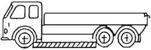

Kraftfahrzeuge mit mindestens vier Rädern und einer bauartbedingten Höchstgeschwindigkeit
von mehr als 25 km/h und ihre Anhänger, jeweils soweit nicht unter Abschnitt 2 oder Abschnitt 3
gesondert aufgeführt, sowie selbstfahrende Arbeitsmaschinen und Anhänger-Arbeitsmaschinen1)
In den nachstehenden Begriffsbestimmungen ist unter "zulässiger Gesamtmasse" die vom Hersteller angegebene "technisch zulässige Gesamtmasse in beladenem Zustand" zu verstehen.
| 1 | Klasse M: | Für die Personenbeförderung ausgelegte und gebaute Kraftfahrzeuge mit mindestens vier Rädern. |
| Klasse M1: | Für die Personenbeförderung ausgelegte und gebaute Kraftfahrzeuge mit höchstens acht Sitzplätzen außer dem Fahrersitz. | |
| Klasse M2: | Für die Personenbeförderung ausgelegte und gebaute Kraftfahrzeuge mit mehr als acht Sitzplätzen außer dem Fahrersitz und einer zulässigen Gesamtmasse bis zu 5 Tonnen. | |
| Klasse M3: | Für die Personenbeförderung ausgelegte und gebaute Kraftfahrzeuge mit mehr als acht Sitzplätzen außer dem Fahrersitz und einer zulässigen Gesamtmasse von mehr als 5 Tonnen. | |
| 2 | Klasse N: | Für die Güterbeförderung ausgelegte und gebaute Kraftfahrzeuge mit mindestens vier Rädern. |
| Klasse N1: | Für die Güterbeförderung ausgelegte und gebaute Kraftfahrzeuge mit einer zulässigen Gesamtmasse bis zu 3,5 Tonnen. | |
| Klasse N2: | Für die Güterbeförderung ausgelegte und gebaute Kraftfahrzeuge mit einer zulässigen Gesamtmasse von mehr als 3,5 Tonnen bis zu 12 Tonnen. | |
| Klasse N3: | Für die Güterbeförderung ausgelegte und gebaute Kraftfahrzeuge mit einer zulässigen Gesamtmasse von mehr als 12 Tonnen. | |
| Im Fall eines Zugfahrzeugs, das zur Verbindung mit einem Sattelanhänger oder Zentralachsanhänger bestimmt ist, besteht die für die Klasseneinteilung des Fahrzeugs maßgebliche Masse aus der Summe der fahrfertigen Masse des Zugfahrzeugs, der Stützlast entsprechenden Masse, die von dem Sattel- oder Zentralachsanhänger auf das Zugfahrzeug übertragen wird, und gegebenenfalls der Höchstmasse der Ladung des Zugfahrzeugs. | ||
| 3 | Klasse O: | Anhänger (einschließlich Sattelanhänger). |
| Klasse O1: | Anhänger mit einer zulässigen Gesamtmasse bis zu 0,75 Tonnen. | |
| Klasse O2: | Anhänger mit einer zulässigen Gesamtmasse von mehr als 0,75 Tonnen bis zu 3,5 Tonnen. | |
| Klasse O3: | Anhänger mit einer zulässigen Gesamtmasse von mehr als 3,5 Tonnen bis zu 10 Tonnen. | |
| Klasse O4: | Anhänger mit einer zulässigen Gesamtmasse von mehr als 10 Tonnen. | |
| Im Fall eines Sattelanhängers oder Zentralachsanhängers ist die für die Klasseneinteilung maßgebliche Höchstmasse gleich der von der oder den Achsen des Anhängers auf den Boden übertragenen Last, wenn der Anhänger mit dem Zugfahrzeug verbunden ist und bis zum zulässigen Höchstwert beladen ist. | ||
| 4 | Geländefahrzeuge (Symbol G) | |
| 4.1 | Fahrzeuge der Klasse N1 mit einer zulässigen Gesamtmasse von nicht mehr als 2 Tonnen und Fahrzeuge
der Klasse M1 gelten als Geländefahrzeuge, wenn sie wie folgt ausgestattet sind:
Außerdem müssen sie mindestens fünf der folgenden sechs Anforderungen erfüllen:
|
|
| 4.2 | Fahrzeuge der Klasse N1 mit einer zulässigen Gesamtmasse von mehr als 2 Tonnen sowie Fahrzeuge der
Klassen N2 und M2 und der Klasse M3 mit einer zulässigen Gesamtmasse von nicht mehr als 12 Tonnen
gelten als Geländefahrzeuge, wenn alle Räder gleichzeitig angetrieben werden können, wobei der Antrieb
einer Achse abschaltbar sein kann, oder wenn die drei folgenden Anforderungen erfüllt sind:
|
|
| 4.3 | Fahrzeuge der Klasse M3 mit einer zulässigen Gesamtmasse von mehr als 12 Tonnen und Fahrzeuge der
Klasse N3 gelten als Geländefahrzeuge, wenn alle Räder gleichzeitig angetrieben werden können, wobei
der Antrieb einer Achse abschaltbar sein kann, oder wenn die folgenden Anforderungen erfüllt sind:
und mindestens vier der folgenden sechs Anforderungen erfüllt sind:
|
|
| 4.4 | Belastungs- und Prüfbedingungen | |
| 4.4.1 | Fahrzeuge der Klasse N1 mit einer zulässigen Gesamtmasse von nicht mehr als zwei Tonnen und Fahrzeuge der Klasse M1 müssen fahrbereit sein, das heißt mit Kühlflüssigkeit, Schmiermitteln, Kraftstoff, Werkzeug und Ersatzrad versehen sowie mit dem Fahrer besetzt sein. (Die Masse des Fahrers wird mit 75 kg veranschlagt - davon entfallen nach der ISO-Norm 2416-1992 68 kg auf die Masse des Insassen und 7 kg auf die Masse des Gepäcks -, der Kraftstoffbehälter ist zu 90 Prozent und die andere Flüssigkeiten enthaltenden Systeme - außer für Wasser genutzte Systeme - sind zu 100 Prozent des vom Hersteller angegebenen Fassungsvermögens gefüllt.) | |
| 4.4.2 | Andere als die unter Nummer 4.4.1. genannten Fahrzeuge müssen mit der vom Hersteller angegebenen technisch zulässigen Gesamtmasse beladen sein. | |
| 4.4.3 | Die Prüfung der geforderten Steigfähigkeit (25 Prozent und 30 Prozent) erfolgt durch einfache Berechnungen. In Grenzfällen kann der technische Dienst jedoch verlangen, dass ein Fahrzeugtyp einem praktischen Fahrversuch unterzogen wird. | |
| 4.4.4 | Bei der Messung des vorderen und hinteren Überhangwinkels und des Rampenwinkels werden die Unterfahrschutzeinrichtungen nicht berücksichtigt. | |
| 4.5 | Definitionen und Skizzen der Bodenfreiheit. (Definitionen für den vorderen und hinteren Überhangwinkel und den Rampenwinkel gemäß ISO-Norm 612-1978 Nummer 6.10, 6.11 und 6.9.) | |
| 4.5.1 | Die "Bodenfreiheit zwischen den Achsen" ist der kleinste Abstand zwischen der Standebene und dem
niedrigsten festen Punkt des Fahrzeugs. Mehrachsaggregate gelten als eine einzige Achse.
 |
|
| 4.5.2 | Die "Bodenfreiheit unter einer Achse" ist durch die Scheitelhöhe eines Kreisbogens bestimmt, der durch
die Mitte der Aufstandsfläche der Reifen einer Achse (der Innenreifen bei Zwillingsreifen) geht und den
niedrigsten Festpunkt zwischen den Rädern berührt.
Kein starres Teil des Fahrzeugs darf in den gestrichelten Kreisabschnitt der Zeichnung hineinragen. Gegebenenfalls ist die Bodenfreiheit mehrerer Achsen in der Reihenfolge ihrer Anordnung anzugeben, beispielsweise 280/250/250. |
|
| 4.6 | Kombinierte Bezeichnung
Das Symbol "G" wird mit dem Symbol "M" oder "N" kombiniert. So wird beispielsweise ein Fahrzeug der Klasse N1, das als Geländefahrzeug verwendet werden kann, mit N1G bezeichnet. |
|
| 5 | Fahrzeuge mit besonderer Zweckbestimmung: Fahrzeuge der Klasse M, N oder O zur Personen- oder Güterbeförderung mit einer speziellen Funktion, für die der Aufbau bzw. die Ausrüstung entsprechend angepasst werden muss. | |
| 5.1 | Wohnmobil: Fahrzeug der Klasse M mit besonderer Zweckbestimmung, das so konstruiert ist, dass es die
Unterbringung von Personen erlaubt und mindestens die folgende Ausrüstung umfasst:
Diese Ausrüstungsgegenstände sind im Wohnbereich fest anzubringen, mit Ausnahme des Tischs, der leicht entfernbar sein kann. |
|
| 5.2 | Beschussgeschützte Fahrzeuge: Fahrzeuge, die zum Schutz der beförderten Insassen bzw. Güter kugelsicher gepanzert sind. | |
| 5.3 | Krankenwagen: Kraftfahrzeuge der Klasse M, die zur Beförderung Kranker oder Verletzter ausgerüstet sind. | |
| 5.4 | Leichenwagen: Kraftfahrzeuge der Klasse M, die zur Beförderung von Leichen ausgerüstet sind. | |
| 5.5 | Wohnanhänger: siehe ISO-Norm 3833-1977, Begriff Nummer 3.2.1.3. | |
| 5.6 | Mobilkrane: Fahrzeuge mit besonderer Zweckbestimmung der Klasse N3, die nicht für die Güterbeförderung geeignet und mit einem Kran mit einem zulässigen Lastmoment bis 400 kNm ausgerüstet sind. | |
| 5.7 | Sonstige Fahrzeuge mit besonderer Zweckbestimmung: Fahrzeuge im Sinne der Nummer 5 mit Ausnahme von Fahrzeugen nach den Nummern 5.1. bis 5.6. | |
Zwei-, drei- und vierrädrige Kraftfahrzeuge2)
| L1e - L7e | Alle Fahrzeuge der Klasse L |
|
| L1e | Leichtes zweirädriges Kraftfahrzeug |
| ||||||||||
der Unterklasse | ||||||||||||
| L1e-A | Fahrrad mit Antriebssystem |
| ||||||||||
| L1e-B | Zweirädriges Kleinkraftrad |
|
| L2e | Dreirädriges Kleinkraftrad |
| ||||||||||||
der Unterklasse | ||||||||||||||
| L2e-P | Dreirädriges Kleinkraftrad für Personenbeförderung |
| ||||||||||||
| L2e-U | Dreirädriges Kleinkraftrad für Güterbeförderung |
|
| L3e | Zweirädriges Kraftrad |
| |||||||||||||||||||||||||
der Unterklasse | |||||||||||||||||||||||||||
| L3e-A1 | Kraftrad mit niedriger Leistung |
| |||||||||||||||||||||||||
| L3e-A2 | Kraftrad mit mittlerer Leistung |
| |||||||||||||||||||||||||
| L3e-A3 | Kraftrad mit hoher Leistung |
| |||||||||||||||||||||||||
Unterklassen | der Unter-Unterklasse | zusätzlich zu den Kriterien für die Einstufung von L3e-A1-, L3e-A2- oder L3e-A3-Fahrzeugen | |||||||||||||||||||||||||
| L3e-AxE (x = 1, 2 oder 3) | Enduro-Kraftrad |
L3e-AxT | (x = 1, 2 oder 3) Trial-Kraftrad
|
|
| L4e | Zweirädriges Kraftrad mit Beiwagen |
|
| L5e | Dreirädriges Kraftfahrzeug |
| ||||||||||||||
der Unterklasse | ||||||||||||||||
| L5e-A | Dreirädriges Kraftfahrzeug |
| ||||||||||||||
| L5e-B | Dreirädriges Fahrzeug zur gewerblichen Nutzung |
|
| L6e | Leichtes vierrädriges Kraftfahrzeug |
| ||||||||||
der Unterklasse | ||||||||||||
| L6e-A | Leichtes Straßen-Quad |
| ||||||||||
| L6e-B | Leichtes Vierradmobil |
| ||||||||||
Unterklassen | der Unter-Unterklasse | zusätzlich zu den Kriterien für die Einstufung eines L6e-B-Fahrzeugs | ||||||||||
| L6e-BP | Leichtes Vierradmobil für Personenbeförderung |
| ||||||||||
| L6e-BU | Leichtes Vierradmobil für Güterbeförderung |
|
| L7e | Schweres vierrädriges Kraftfahrzeug |
| ||||||||||
der Unterklasse | ||||||||||||
| L7e-A | Schweres Straßen-Quad |
| ||||||||||
Unterklassen | der Unter-Unterklasse | |||||||||||
| L7e-A1 | A1 schweres Straßen-Quad |
| ||||||||||
| L7e-A2 | A2 schweres Straßen-Quad |
| ||||||||||
der Unterklasse | ||||||||||||
| L7e-B | Schweres Gelände-Quad |
| ||||||||||
Unterklassen | der Unter-Unterklasse | |||||||||||
| L7e-B1 | Gelände-Quad |
| ||||||||||
| L7e-B2 | Side-by-Side-Buggy |
|
der Unterklasse | ||||||||||||||
| L7e-C | Schweres Vierradmobil |
| ||||||||||||
Unterklassen | der Unter-Unterklasse | zusätzlich zu den Kriterien für die Unterklasse L7e-C schwere Vierradmobile | ||||||||||||
| L7e-CP | Schweres Vierradmobil für Personenbeförderung |
| ||||||||||||
| L7e-CU | Schweres Vierradmobil für Güterbeförderung |
|
Diese Einteilung gilt nicht für die nachstehenden Fahrzeuge:
| a) | Fahrzeuge mit einer bauartbedingten Höchstgeschwindigkeit von bis zu 6 km/h; |
| b) | Fahrzeuge, die ausschließlich zur Benutzung durch körperbehinderte Personen bestimmt sind; |
| c) | ausschließlich fußgängergeführte Fahrzeuge; |
| d) | Fahrzeuge, die ausschließlich für die Benutzung im sportlichen Wettbewerb bestimmt sind; |
| e) | Fahrzeuge, die zur Benutzung durch die Streitkräfte, den Katastrophenschutz, die Feuerwehr, die für die Aufrechterhaltung der öffentlichen Ordnung zuständigen Kräfte und die medizinischen Notdienste ausgelegt und gebaut sind; |
| f) | land- und forstwirtschaftliche Fahrzeuge gemäß der Verordnung (EU) Nr. 167/2013, Maschinen gemäß der Richtlinie 97/68/EG und der Richtlinie 2006/42/EG des Europäischen Parlaments und des Rates vom 17. Mai 2006 über Maschinen und zur Änderung der Richtlinie 95/16/EG (ABl. L 157 vom 9.6.2006, S. 24; L 76 vom 16.3.2007, S. 35), die zuletzt durch die Verordnung (EU) 2019/1243 (ABl. L 198 vom 25.7.2019, S. 241) geändert worden ist, sowie Kraftfahrzeuge gemäß der Richtlinie 2007/46/EG; |
| g) | Fahrzeuge, die in erster Linie für die Benutzung im Gelände bestimmt und für das Befahren unbefestigter Flächen ausgelegt sind; |
| h) | Fahrräder mit Pedalantrieb mit Trethilfe, die mit einem elektromotorischen Hilfsantrieb mit einer maximalen Nenndauerleistung von bis zu 250 W ausgestattet sind, dessen Unterstützung unterbrochen wird, wenn der Fahrer im Treten einhält, und dessen Unterstützung sich mit zunehmender Fahrzeuggeschwindigkeit progressiv verringert und unterbrochen wird, bevor die Geschwindigkeit des Fahrzeugs 25 km/h erreicht; |
| i) | selbstbalancierende Fahrzeuge; |
| j) | Fahrzeuge, die nicht mindestens einen Sitzplatz haben; |
| k) | Fahrzeuge, bei denen sich der R-Punkt in einer Sitzposition des Fahrers bei den Klassen L1e, L3e und L4e in einer Höhe von ≤ 540 mm oder bei den Klassen L2e, L5e, L6e und L7e in einer Höhe von ≤ 400 mm befindet. |
Grundlage der in Abschnitt 2 genannten Leistungsgrenzen ist die maximale Nenndauerleistung bei Fahrzeugen mit Elektroantrieb und die maximale Nutzleistung bei Fahrzeugen, die von einem Verbrennungsmotor angetrieben werden. Das Gewicht eines Fahrzeugs wird als identisch mit seiner Masse in fahrbereitem Zustand betrachtet.
Die Einstufung eines L3e-Fahrzeugs als Unterklasse je nachdem, ob seine bauartbedingte Höchstgeschwindigkeit weniger, gleich oder mehr als 130 km/h beträgt, ist unabhängig von seiner Einstufung in die Antriebsleistungsklassen L3e-A1, L3e-A2 oder L3e-A3.
Land- oder forstwirtschaftliche Zugmaschinen, Anhänger und gezogene auswechselbare Geräte3)
| 1 | Klasse T: | alle Zugmaschinen auf Rädern; jeder Klasse von Zugmaschinen auf Rädern wird je nach ihrer Auslegungsgeschwindigkeit am Ende ein Index "a" oder "b" hinzugefügt:
|
||||
| Klasse T1: | Zugmaschinen auf Rädern mit einer Spurweite der dem Fahrer am nächsten liegenden Achse von mindestens 1 150 mm, einer Leermasse in fahrbereitem Zustand von mehr als 600 kg und einer Bodenfreiheit bis 1 000 mm. | |||||
| Klasse T2: | Zugmaschinen auf Rädern mit einer Mindestspurweite von weniger als 1 150 mm, einer Leermasse in fahrbereitem Zustand von mehr als 600 kg, einer Bodenfreiheit bis 600 mm; wenn der Quotient aus der Höhe des Schwerpunkts der Zugmaschine über dem Boden und der mittleren Mindestspurweite der Achsen mehr als 0,90 beträgt, ist die bauartbedingte Höchstgeschwindigkeit auf 30 km/h begrenzt. | |||||
| Klasse T3: | Zugmaschinen auf Rädern mit einer Leermasse in fahrbereitem Zustand bis 600 kg. | |||||
| Klasse T4: | Zugmaschinen auf Rädern mit besonderer Zweckbestimmung. | |||||
| Klasse T4.1: | (Stelzradzugmaschinen): Zugmaschinen, die für den Einsatz in hohen Reihenkulturen, zum Beispiel Rebkulturen, ausgelegt sind. Sie sind durch ein überhöhtes Fahrgestell oder einen überhöhten Fahrgestellteil gekennzeichnet, so dass sie parallel zu den Pflanzenreihen über diese hinweg fahren und dabei eine oder mehrere Reihen zwischen ihre Räder nehmen können. Sie sind zur Beförderung oder zum Antrieb von Geräten konzipiert, die vorn, zwischen Achsen, hinten oder auf einer Plattform angebracht sind. Befindet sich die Zugmaschine in Arbeitsposition, ist die Bodenfreiheit, gemessen in der Vertikalen der Pflanzenreihen, größer als 1 000 mm. Beträgt der Quotient aus der Höhe des Schwerpunkts der Zugmaschine über dem Boden (bei normaler Bereifung) und der mittleren Mindestspurweite der Achsen mehr als 0,90, so ist die bauartbedingte Höchstgeschwindigkeit auf 30 km/h begrenzt. |
|||||
| Klasse T4.2: | (überbreite Zugmaschinen): Zugmaschinen, die durch ihre großen Abmessungen gekennzeichnet und speziell zur Bearbeitung großer landwirtschaftlicher Flächen bestimmt sind. |
|||||
| Klasse T4.3: | (Zugmaschinen mit geringer Bodenfreiheit): Zugmaschinen mit Vierradantrieb, deren auswechselbare Geräte für den Einsatz in der Land- und Forstwirtschaft bestimmt sind, mit einem Tragrahmen, einer oder mehreren Zapfwellen, einer technisch zulässigen Masse von höchstens 10 t und einem Verhältnis technisch zulässige Masse/maximale Leermasse in fahrbereitem Zustand unter 2,5 sowie mit einem Schwerpunkt (bei normaler Bereifung) von weniger als 850 mm über dem Boden. |
|||||
| 2 | Klasse C: | Zugmaschinen auf Gleisketten, die über die Gleisketten oder über eine Kombination von Rädern und Gleisketten angetrieben werden (Definition der Unterklassen analog zu der Klasse T). | ||||
| 3 | Klasse R: | Anhänger; jeder Klasse von Anhängern wird je nach ihrer Auslegungsgeschwindigkeit am Ende ein Index "a" oder "b" hinzugefügt:
|
||||
| Klasse R1: | Anhänger, bei denen die Summe der technisch zulässigen Massen je Achse bis zu 1 500 kg beträgt. | |||||
| Klasse R2: | Anhänger, bei denen die Summe der technisch zulässigen Massen je Achse mehr als 1 500 kg und bis zu 3 500 kg beträgt. | |||||
| Klasse R3: | Anhänger, bei denen die Summe der technisch zulässigen Massen je Achse mehr als 3 500 kg und bis zu 21 000 kg beträgt. | |||||
| Klasse R4: | Anhänger, bei denen die Summe der technisch zulässigen Massen je Achse mehr als 21 000 kg beträgt. | |||||
| 4 | Klasse S: | gezogene auswechselbare Geräte. Jeder Klasse von gezogenen auswechselbaren Geräten wird je nach ihrer Auslegungsgeschwindigkeit am Ende ein Index "a" oder "b" hinzugefügt:
|
||||
| Klasse S1: | gezogene auswechselbare Geräte, bei denen die Summe der technisch zulässigen Massen je Achse bis zu 3 500 kg beträgt. | |||||
| Klasse S2: | gezogene auswechselbare Geräte, bei denen die Summe der technisch zulässigen Massen je Achse über 3 500 kg beträgt. Die Einteilung gilt nicht für speziell zum Einsatz in der Forstwirtschaft bestimmte Maschinen wie Seilschlepper (Skidder) und Rückezüge (Forwarder) nach ISO-Norm 6814:2000, für Forstmaschinen auf Fahrgestell für Erdbaumaschinen nach ISO-Norm 6165:2001 und für auswechselbare Maschinen, die im öffentlichen Straßenverkehr von einem anderen Fahrzeug in vollständig angehobener Stellung mitgeführt werden. |